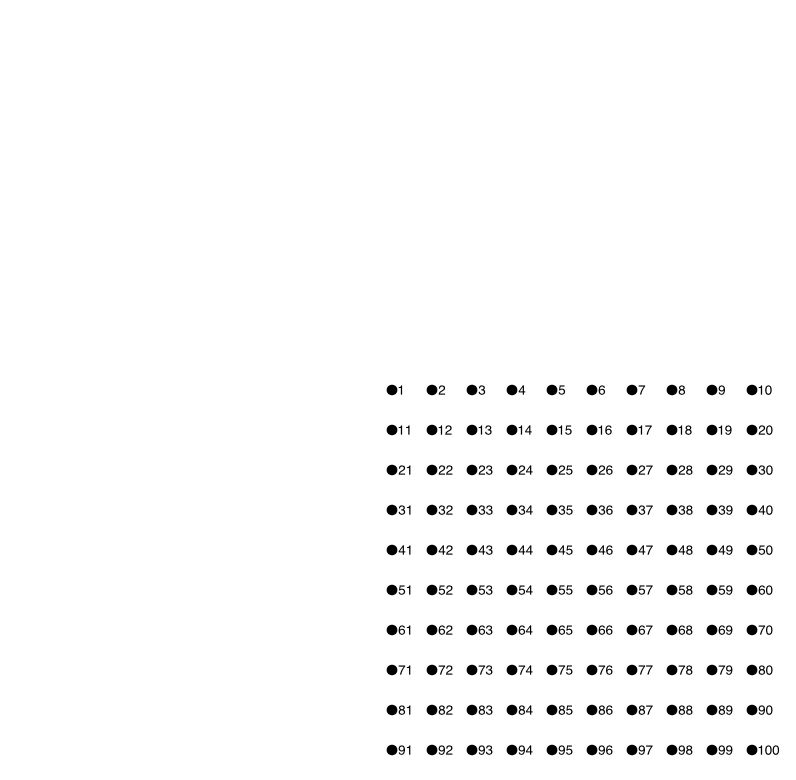
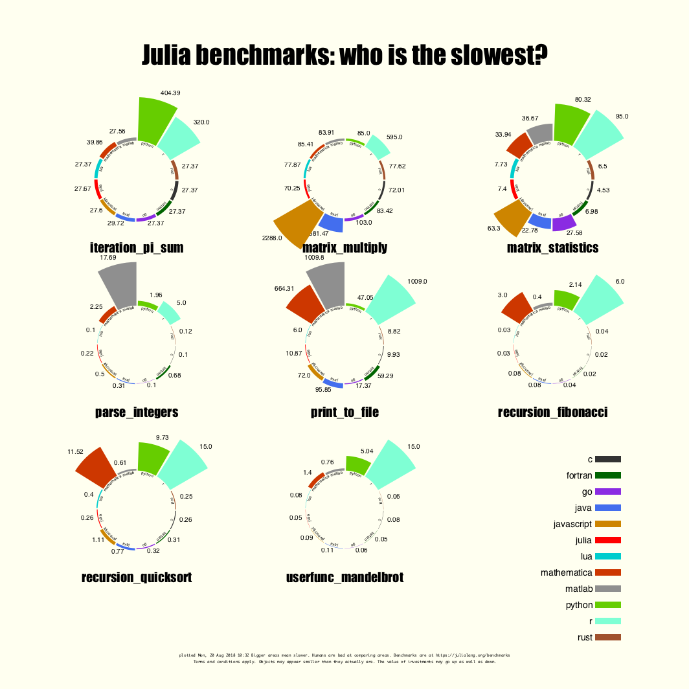

Examples
The obligatory "Hello World"
Here's the "Hello world":

using Luxor
Drawing(1000, 1000, "hello-world.png")
origin()
background("black")
sethue("red")
fontsize(50)
text("hello world")
finish()
preview()Drawing(1000, 1000, "hello-world.png") defines the size of the image, and the location and type of the finished image. origin() moves the 0/0 point to the centre of the drawing surface (by default it's at the top left corner). Thanks to Colors.jl we can specify colors by name: background("black") defines the color of the background of the drawing. text("helloworld") draws the text. It's placed at the current 0/0 if you don't specify otherwise. finish() completes the drawing and saves the image in the file. preview() tries to open the saved file using some other application (eg Preview on macOS).
The macros @png, @svg, and @pdf provide shortcuts for making and previewing graphics without having to provide the set-up and finish instructions:
# using Luxor
@png begin
fontsize(50)
circle(O, 150, :stroke)
text("hello world", halign=:center, valign=:middle)
end
@svg begin
g = [Point(3x, 3y) for x in 1:10:100, y in 1:10:100]
circle.(g, 4, :fill)
label.(string.([(y - 1) * 10 + x for x in 1:10, y in 1:10]), :E, g)
end
The Julia logos
Luxor contains two functions that draw the Julia logo, either in color or a single color, and the three Julia circles.
using Luxor
Drawing(600, 400, "assets/figures/julia-logos.png")
origin()
background("white")
for theta in range(0, pi/8, 16)
gsave()
scale(0.25)
rotate(theta)
translate(250, 0)
randomhue()
julialogo(action=:fill, color=false)
grestore()
end
gsave()
scale(0.3)
juliacircles()
grestore()
translate(200, -150)
scale(0.3)
julialogo()
finish()
The gsave() function saves the current drawing parameters, and any subsequent changes such as the scale() and rotate() operations are discarded by the next grestore() function.
You can change the extension of the file name, for example "julia-logos.png" to "julia-logos.svg" or "julia-logos.pdf" or "julia-logos.eps", to produce alternative formats.
Something a bit more complicated: a Sierpinski triangle
Here's a version of the Sierpinski recursive triangle, clipped to a circle.

# Subsequent examples will omit these setup and finishing functions:
#
# using Luxor, Colors
# Drawing()
# background("white")
# origin()
function triangle(points, degree)
sethue(cols[degree])
poly(points, :fill)
end
function sierpinski(points, degree)
triangle(points, degree)
if degree > 1
p1, p2, p3 = points
sierpinski([p1, midpoint(p1, p2),
midpoint(p1, p3)], degree-1)
sierpinski([p2, midpoint(p1, p2),
midpoint(p2, p3)], degree-1)
sierpinski([p3, midpoint(p3, p2),
midpoint(p1, p3)], degree-1)
end
end
function draw(n)
circle(O, 75, :clip)
my_points = ngon(O, 150, 3, -pi/2, vertices=true)
sierpinski(my_points, n)
end
depth = 8 # 12 is ok, 20 is right out (on my computer, at least)
cols = distinguishable_colors(depth)
draw(depth)
# finish()
# preview()The main type (apart from the Drawing) is the Point, an immutable composite type containing x and y fields.
Working in Jupyter
If you want to work interactively, you can use an environment such as a Jupyter notebook, and load Luxor at the start of a session. The first drawing will take a few seconds, because the Cairo graphics engine needs to warm up. Subsequent drawings are then much quicker. (This is true of much graphics and plotting work, of course. And if you're working in the REPL, after your first drawing subsequent drawings will be much quicker.)

More examples
Maps
Luxor can read simple polygons from shapefiles, so you can create simple maps. For example, here's part of a map of the world built from a single shapefile, together with the locations of most airports read in from a text file and overlaid.

The latitude and longitude coordinates are converted directly to drawing coordinates. The latitude coordinates have to be negated because y-coordinates in Luxor typically increase down the page, whereas latitude values increase as you travel North.
This is the full map:

You'll need to install the Shapefile.jl package before running the code:
using Shapefile, Luxor
include(Pkg.dir("Luxor") * "/src/readshapefiles.jl")
function drawairportmap(outputfilename, countryoutlines, airportdata)
Drawing(4000, 2000, outputfilename)
origin()
scale(10, 10)
setline(1.0)
fontsize(0.075)
gsave()
setopacity(0.25)
for shape in countryoutlines.shapes
randomhue()
pgons, bbox = convert(Array{Luxor.Point, 1}, shape)
for pgon in pgons
poly(pgon, :fill)
end
end
grestore()
sethue("black")
for airport in airportdata
city, country, lat, long = split(chomp(airport), ",")
location = Point(parse(long), -parse(lat)) # flip y-coordinate
circle(location, .01, :fill)
text(string(city), location.x, location.y - 0.02)
end
finish()
preview()
end
worldshapefile = Pkg.dir("Luxor") * "/docs/src/assets/examples/outlines-of-world-countries.shp"
airportdata = readlines(Pkg.dir("Luxor") * "/docs/src/assets/examples/airports.csv")
worldshapes = open(worldshapefile) do f
read(f, Shapefile.Handle)
end
drawairportmap("/tmp/airport-map.pdf", worldshapes, airportdata)link to Julia source | link to PDF map
Sector chart

Sector charts look cool but they aren't always good at their job. This chart takes the raw benchmark scores from the Julia website and tries to render them literally as radiating sectors. The larger the sector, the slower the performance, so it's difficult to see the Julia scores sometimes...!
link to PDF original | link to Julia source
Ampersands
Here are a few ampersands collected together, mainly of interest to typomaniacs and fontophiles. It was necessary to vary the font size of each font, since they're naturally different.

link to PDF original | link to Julia source
Moon phases
Looking upwards again, this moon phase chart shows the calculated phase of the moon for every day in a year.

link to PDF original | link to github repository
Misc images
Sometimes you just want to take a line for a walk: